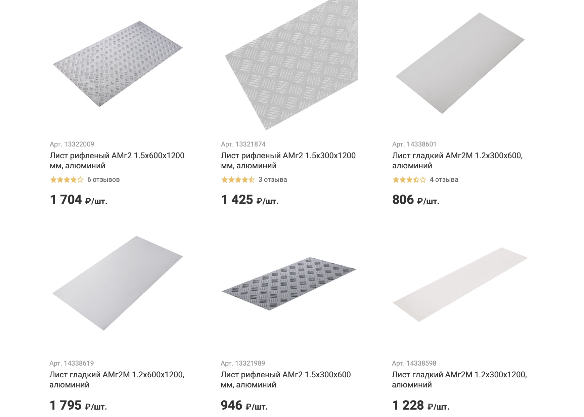
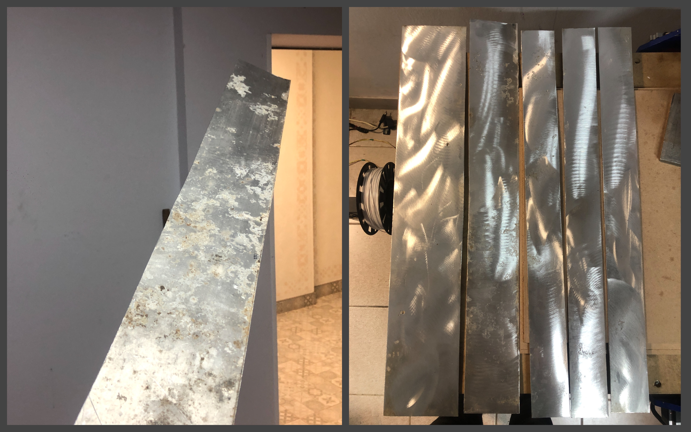
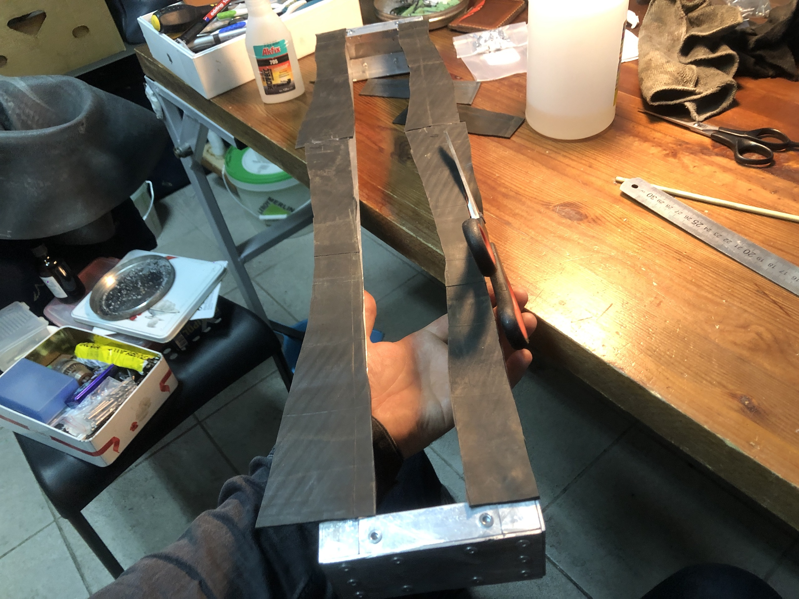

Модернизация Cutmaster CM-1500
Навигация по проекту:
- Покупка и разбор фрезерного станка Cutmaster CM-1500
- Модернизация Cutmaster CM-1500
- Установка и настройка Grbl
После покупки я решил произвести следующие обновления:
- Замена стационарного компьютера на встроенный контроллер;
- Замена корпуса для электроники;
- Добавление бортиков для ограчения разлёта стружки.
Я также думал про укрепление портала, но пока решил отложить эту затею, пока у меня не вырабатается понимание что это действительно необходимо.
Замена стационарного компьютера на встроенный контроллер
Использовать станок в такой компановке я не захотел, в первую очередь ввиду использования отдельного компьютера в качестве управляющего контроллера. Мне кажется эта эпоха давно прошла и управлять станком должен маленький контроллер (внутри станка) на вход которого подается Gcode. Для этого я опредилил для себя следующую схему:
У этого подхода есть несколько неоспоримых плюсов:
- Контроллер не может зависнуть ввиду отсутствия многозадачности как компьютер, а значит отсуствует вероятность пропуска шагов по причине зависания компьютера. И весь геморой по настройке компьютера под эту среду.
- Убирается огромный и ненужный кусок железа в виде системного блока и монитора.
- Управление производится через веб-интерфейс в браузере через Wi-Fi или интернет.
Я выбрал контроллер станка на базе 8-битного МК (Arduino UNO), тк считаю, что мне хватит его частоты для коммутирования обмоток двигателей (даже с учетом возможного использования микрошагов на PLC330), в коде прошивки для фрезера отсуствуют сложные алгоритмы, а значит не нужен большой объём flash-памяти, ну и в заключение мне не нужно использовать флешкарту для хранения управляющей программы, а значит мне подходит Arduino UNO по количеству портов.
В любом случае, замена Arduino Uno с CNC shield, на ту же Arduino Mega с шилдом RAMPS и более прикольной прошивкой Marlin – не составит труда в будущем.
Замена корпуса для электроники
Это самая обширная часть с точки зрения работ. Или может это просто незапланировано затянулось: суммарно эти работы растянулись на 16 дней в течении половины года. А начал я с того, что попытался найти хороший герметичный пластиковый бокс, который можно было бы установить на раму сзади и уместить в него обновлённый блок питания на большую мощность (для питания шпинделя от него же), драйвер PLC330, Arduino UNO + CNC shield, Raspberry Pi.
Однако подходящего по габаритам корпуса мне найти не удалось. И я немного приуныл ввиду отсутствия простого решения сделать хороший корпус для станка. И я решил пойти по пути сделать самому и дешево.
Вот такие габариты были необходимы, чтобы вместить в станок обновленный блок питания (коробка короче, но вообще эта конструкция должна быть во всю длину).
Первая идея, что пришла в голову это соорудить металлический, пластиковый или деревянный корпус. Использовать дерево мне очень не хотелось. А делать пластиковый означало делать металлический каркас и обшивать его пластиком – такое: усилий одинаково, но крепление внутренних компонентов затруднено.
Затем я посмотрел цены на листовой алюминий в леруа. Что-то подходящее по размером стоило 1500 рублей.

Покупать что-то за такие деньги без понимания как делать корпус я не особо горел. И я отложил решение этого вопроса на некоторое время и отправился на выходные опробовать купленный металлоискатель в одну из деревенек. Каково было моё удивление когда в подполе полуразрушенной избы я вытащил огрызок листа алюминия. Я сразу понял, что я из него сделаю и счастливый отправился в мастерcкую.
Далее стояла задача сделать каркас, для этого я хотел использовать старый 1.5мм уголок обрезки которого у меня были в избытке. Я взял три отрезка и сделал в них срезы под 45 градусов, чтобы сварить их в угол с помощью TIG-сварки у своего знакомого.
После пары часов, я понял что они у меня не варятся, а прожигаются. Как я позже узнал дело скорее всего было в том, что это был дюралевый сплав содержащий кремний и он не варится. Однако я также понял, что в принципе использовать для этого сварку я не хочу, тк попробовав варить даже более толстые изделия это не получалось легко и красиво.
После чего я отправился в леруа и купил:
- Уголок 20x20 толщиной 1мм;
- Клепочник – взял самый дорогой, потому что до этого был опыт работы с дешевыми, которые постоянно заедали и это был ад;
- Клепки покороче и подлиньше
После прикидывания возможного раскроя огрызка листа алюминия, я понял что сделать большой корпус, который я планировал изначально не получится, а также он будет выглядеть избыточным. В принципе всё кроме блока питания большей мощности который был у меня туда помещалось, и я решил решить вопрос с блоком питания подходящего размера позже, а корпус сделать меньшего размера.
Прежде чем разрезать алюминий на полосы меньшего размера. Я обработал его от окиси и грязи с помощью наждачного круга 120 зернистости на УШМ. Надо заметить, что это очень эффективно. А затем с помощью той же УШМ произвел нарезку. Надо заметить, что в процессе нарезки я попробовал три отрезных диска два самых дешевых диска для резки стали толщиной 0.8 и 1мм, второй Dexter для резки алюминия толщиной 2мм. И лучше всего себя показал самый дешевый диск на 1мм для стали. Никаких закусов я не получил, все резалось очень легко.

Я проводил нарезку с запасом 2-3мм с каждой из сторон, но это оказлось избычным в идеале запас с каждый из сторон должен быть не более 1мм. Затем излишки стачиваются шлифовальным кругом по разметочной линии. Полученный рез получается с погрешностью 0.5мм, что для данной задачи мне подходит.
Затем я нарезал в размер уголков и начал производить первоначальную сборку конструкции с помощью болтов для проверки внешних размеров.
После я обнаружил ошибку на 2-3мм в месте, где располагались отверстия в боковых пластинах (не учел толщину материала). Чудом получилось заделать их используя припой для TIG сварки и газовую горелку. Я бы сказал, что просто в том месте расплавил алюминий и добавив туда припоя.
После произвел сборку на клепках
Однако, после того как поигрался со собранной конструкцией, понял что ей нехватает жесткости в углах.
Добавил проставку и увеличил длину уголка.
Дальше стояла задача как разместить внутри блока всю электронику. При чем я планировал разместить блок питания для шпинделя под столом, а текущий оставить как есть для питания логики и шаговых двигателей.
Первое что необходимо было сделать это заменить текущий разъём LPT порта на вертикальный, чтобы он уместился в корпус.

Далее я просверлил отверстия в радиаторе драйвера и блока питания, нарезал там резьбу. Вкрутил в отверстия стойки и зафиксировал их клеем на основе цианокрилата.
На этом проблемы с установкой драйвера не закончились, несмотря на то, что он влезал в корпус, подключить в новый вертикльный разъём ответную часть не получалось, и пришлось перепаивать во второй раз, на этот раз я использовал шлейф, который был в комплекте и вынес разъём на радиатор сбоку, также на латунных стойках.
Затем наступила очередь контроллера занять свое место в корпусе. На скорую руку я соорудил следующее крепление.
Однако решение оказалось неудачным. Несмотря на то, что оно помещалось в корпусе, не оставалось места для подключение проводов, а между платами был целый сантиметр неиспользуемого пространства. Пока отложил эту проблему и решил сделать крепление крышки к корпусу и корпуса к раме станка.
Но как и полагал резьба в 1мм алюминии не держит от слова совсем. Тогда я развёл ЭД20 и попытался вклеить гайки.
При первой же попытке затянуть гайки половину сразу посрывало, клей не держал нагрузку на кручение. По совету знакомого я попробовал провернуть ту же историю с клеем Poxipol, предварительно зашкурив поверхность грубой наждачной бумагой.
Poxipol держал получше, но при любом намеке на затяжку вёл себя аналогично и гайки отпадали вместе с клеем. Также очень много гаек склеилось с болтами которыми я их крепил на момент склейки и пришлось их обрезать и отбивать. Как итог я понял что гайки клеить не нужно. И решил подумать как можно сделать иначе.
В это время просверлил отверстия в корпусе для его крепления к раме станка. Места отверстий выбрал так, чтобы можно было открутить корпус не вынимая электроники. А также сделал отверстия большего размера чтобы можно было закрутить винты с помощью отвертки.
После некоторого изучения темы, я узнал что есть резьбовые клёпки. Я искал М3 и чудом нашел их в Самаре в магазине “Все инструменты”.
Тк шляпка клёпок имеет свою толщину не позволяет плотно прилегать крышке к корпусу, я решил изготовить резиновую прокладку из старой автомобильной камеры.
Резину я приклеил на клей на основе цианокрилата.

Не советую использовать цианокрилат для этих целий. Он хрупкий и плохо прилепает. Сейчас я бы использовать клей момент универсальный.
Далее я нарезал пару кусочкой алюминиевого профиля и сделал крепление платы концевиков.
Вот так выглядит промежуточный результат:
Кстати для крепеления контроллера я использовал кусок стеклотестолита закрепленного на пару уголков в которых пара резьбовых клепок за которые эта конструкция крепится к корпусу снизу.
Уже ожидаемо плата для подсоединения концевиков отвалилась.
Далее я заточил трубку и вырезал резины сверху клепокоп, чтобы все прижималось получше.
После этого момента у меня был очень большой перерыв в доработке станка примерно в 5 месяцев. И вот 25 апреля 2021 года я продолжил это занятие. Основным для меня моментом было то, что я решил немного понизить планку по тому что получится и сделать не-легко-разборную конструкцию которую планировал ранее. А также решил временно не разводить блок питания необходимой мощности внутрь корпуса, а использовать тот, что у меня есть на 600Вт для питания шпинделя и всей электроники.
Сделал крепление гофры из алюминиевых табличек с советской техники
Смоделировал и напечатал крепления для кабельканала

Завел провода сбоков
И начал подключение электроники
Плату коневиков закрепил на радиатор драйвера двигателей с помощью пластинки-проставки.
Из провода от FDD дисковода, оставшегося разъёма LPT порта и разъёмов Dupunt изготовил переходник для подсоединения драйвера к контроллеру.
После тестов концевиков оказалось, что в схему необходимо добавить пару диодов и подтягивающее сопротивление. В противном случае сигнал с концевиков по Y приходил только в случае их одновременного срабатывания.
Также тесты показали, что при закрытом корпусе сигнал Wi-Fi не проходит от слова совсем, поэтому нужно как-то вывести антенну. Пока не придумал как это лучше сделать. Напишу об этом позже как доделаю.
Далее начал наладку прошивки контроллера о чем в следующей статье.